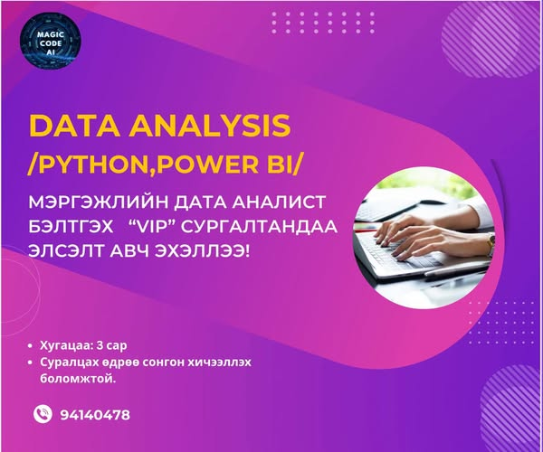
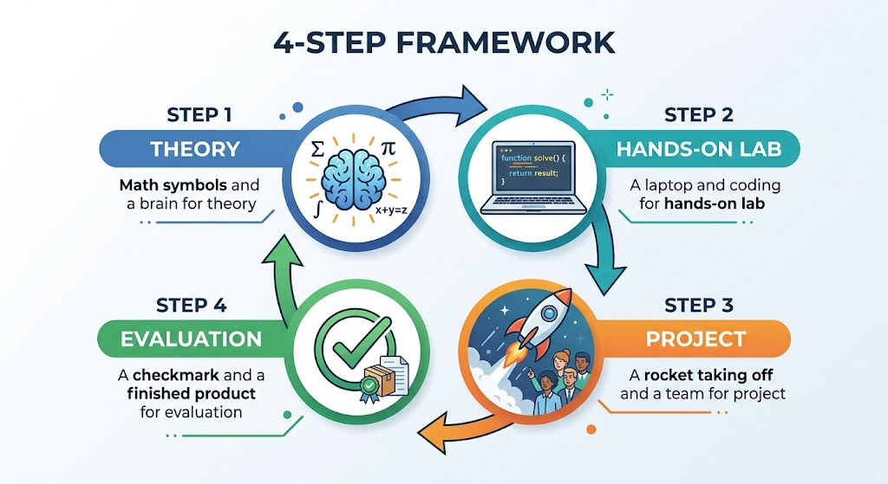

МУИС-ийн багш | AI ба Гүн сургалтын судлаач | "Magic Code AI"-г үүсгэн байгуулагч
МУИС-ийн Их Сургуулийн Сургалт • IT Park • Magic Code AI Мэргэшүүлэх Хөтөлбөрүүд
Цогтбаатарын Энхтуяа нь боловсролын салбарт 17 жил компьютерийн багшаар ажилласан бөгөөд компьютерийн ухааны 18 төрлийн хичээлүүдийг нийт 10,000 орчим оюутан, мэргэжилтнүүдэд зааж сургасан туршлагатай. Сүүлийн жилүүдэд МУИС-ийн хичээлүүдээс гадна Мэдээллийн технологийн үндэсний парк (IT Park) болон Magic Code AI академиар дамжуулан Хиймэл Оюун (AI), Дата Анализ, Power BI чиглэлээр VIP болон танхим/онлайн сургалтуудыг тогтмол зохион байгуулж байна.
Доорх сургалтын картууд дээр дарахад албан ёсны постер, нарийвчилсан хөтөлбөр, хугацаа, төлбөр, шаардлагууд дэлгэгдэн харагдана:
Огноо: 2026.11.03, 11.05 | Мягмар, Пүрэв 10:00 - 17:20 | Багш: МУИС - Ц.Энхтуяа | Төлбөр: 800,000 төгрөг
Мэдээллийн технологийн үндэсний парк
Power BI-ийн дунд шатны мэдлэгтэй оролцогчдын өгөгдөл боловсруулах, өгөгдлийн загварчлал хийх, нарийвчилсан тооцоолол боловсруулах, тайлангийн гүйцэтгэл болон шинжилгээний чадвараа ахисан түвшинд хөгжүүлэхэд чиглэнэ.
| Хугацаа: | 2026 оны 11 дүгээр сарын 03, 05-ны өдрүүдэд |
| Нийт хичээл: | Нийт 2 удаагийн бүтэн өдрийн эрчимжүүлсэн хичээл |
| Өдрүүд, Цаг: | Мягмар, Пүрэв гарагт 10:00 - 17:20 |
| Анги дүүргэлт: | 8 - 10 сурагч |
| Сургалтын багш: | МУИС-ийн багш Ц.Энхтуяа |
| Үндсэн төлбөр: | 800,000 төгрөг |
| Лавлах утас: | 8089 0893 (IT Park) |
Огноо: 2026.10.13, 10.15 | Мягмар, Пүрэв 10:00 - 17:20 | Багш: МУИС - Ц.Энхтуяа | Төлбөр: 750,000 төгрөг
Мэдээллийн технологийн үндэсний парк
Power BI-ийн суурь мэдлэгтэй оролцогчдод өгөгдөл боловсруулах, бизнесийн шинжилгээ хийх, тайлан болон хяналтын самбарыг (Dashboard) илүү ахисан түвшинд боловсруулах мэдлэг, ур чадвараа гүнзгийрүүлэхэд чиглэнэ.
| Хугацаа: | 2026 оны 10 дугаар сарын 13, 15-ны өдрүүдэд |
| Нийт хичээл: | Нийт 2 удаагийн бүтэн өдрийн танхимын хичээл |
| Өдрүүд, Цаг: | Мягмар, Пүрэв гарагт 10:00 - 17:20 |
| Анги дүүргэлт: | 8 - 10 сурагч |
| Сургалтын багш: | МУИС-ийн багш Ц.Энхтуяа |
| Үндсэн төлбөр: | 750,000 төгрөг |
| Лавлах утас: | 8089 0893 (IT Park) |
Хугацаа: 3 сар | Бямба гараг бүр 10:00 - 13:00 | Байршил: M bank Arena, FOM Coffee Shop | Утас: 94140478
Magic Code AI хөтөлбөр
Ц.Энхтуяа багшийн санаачилсан Magic Code AI академийн VIP Class сургалт нь мэдээллийн технологи, хиймэл оюун, өгөгдлийн шинжилгээ, ёс зүйг цогцоор нь эзэмшүүлэх 3 сарын менторшип хөтөлбөр юм.
| Хугацаа: | 3 сар |
| Хичээл орох өдөр: | Бямба гараг |
| Цаг: | 10:00 - 13:00 |
| Байршил: | Уранган групп, M bank Arena 1 давхарт FOM Coffee Shop |
| Холбогдох утас: | 94140478 |
Excel, SQL, Python, Power BI | Бодит дата төсөл | Гэрчилгээ олгоно | Утас: 94140478
Magic Code AI хөтөлбөр
Түүхий өгөгдлийг цуглуулах, цэвэрлэхээс эхлээд шинжилгээ хийх, интерактив dashboard тайлан бүтээх хүртэлх бүх шатыг заадаг практик хөтөлбөр.
Утас: 94140478 |
Цахим шуудан: magiccodeai@gmail.com
Байршил: Уран ганы зүүн талд, Цагдаа хотхон
30а байр (Танхим ба Онлайн хосолсон)
Хугацаа: 3 сар | Суралцах өдрөө сонгон хичээллэх боломжтой | Утас: 94140478

Magic Code AI хөтөлбөр
Дата аналитикийн чиглэлээр мэргэшиж, хөдөлмөрийн зах зээлд өндөр үнэлэгдэх ур чадвар эзэмшихийг хүссэн хүмүүст зориулсан 3 сарын VIP менторшип хөтөлбөр.
Лавлах утас: 94140478
Цогтбаатарын Энхтуяа багш нь МУИС-ийн Мэдээллийн технологи, электроникийн сургууль (МТЭС)-ийн Мэдээлэл, компьютерын ухааны тэнхимд бакалавр болон магистрын түвшинд дараах 5 үндсэн чиглэлээр хичээл зааж байна:
Оюунлаг агентын бүтэц, хайлтын мод (BFS, DFS, A* оновчлол, Minimax), мэдлэг дүрслэл, логик дүгнэлт ба машин сургалтын суурь зарчмууд.
Хиймэл мэдрэлийн сүлжээний бүтэц (CNN, ResNet, U-Net, DenseNet), дүрс боловсруулалт ба сегментчлэл.
Python хэл дээр өгөгдөл цэвэрлэх (Pandas, NumPy), статистик шинжилгээ, Exploratory Data Analysis (EDA) болон өгөгдлийн дүрслэл.
Байгууллагын нөөц төлөвлөлтийн систем (ERP), реляци өгөгдлийн сангийн бүтэц (SQL), хүний нөөцийн систем (HRIS).
Өгөгдлийн бүтцийн нарийн төвөгтэй хэлбэрүүд (Мод, граф, хэш), алгоритмын үр ашиг (Big-O analysis), динамик програмчлал.

МУИС ба Magic Code AI-д хэрэгжүүлдэг 4 шатлалт сургалтын дадлагажуулах загвар
Аливаа технологийг хар хайрцаг байдлаар ашиглах бус, түүний цаадах математик загвар, вектор тооцоолол, статистик үндэслэлийг гүн ойлгуулдаг.
Бэлэн код хуулахыг хориглож, суралцагч бүр бохир өгөгдлийг цэвэрлэх, алдааг бие даан илрүүлж засах туршлага эзэмшдэг.
Оюутны судалгааны ажлыг бодит асуудал шийдэх чиглэлээр удирдаж, эрдэм шинжилгээний хуралд өрсөлдөх хэмжээний төсөл болгон чиглүүлдэг.
Сургалтын төгсгөлд суралцагчийн гаргасан үр дүнг хэлэлцэж, код ба архитектурыг практик шаардлагад нийцүүлэн бататгадаг.
Дээр дурдсан сургалтуудад бүртгүүлэх болон байгууллагын захиалгат сургалт зохион байгуулах хүсэлтээ дараах сувгуудаар ирүүлнэ үү:
Magic Code AI лавлах утас: 94140478
IT Park Power BI сургалтын утас: 8089 0893
Цахим шуудан: magiccodeai@gmail.com
Байршил 1: Уранган групп, M bank Arena 1 давхар (FOM Coffee Shop)
Байршил 2: Уран ганы зүүн талд, Цагдаа хотхон 30а байр